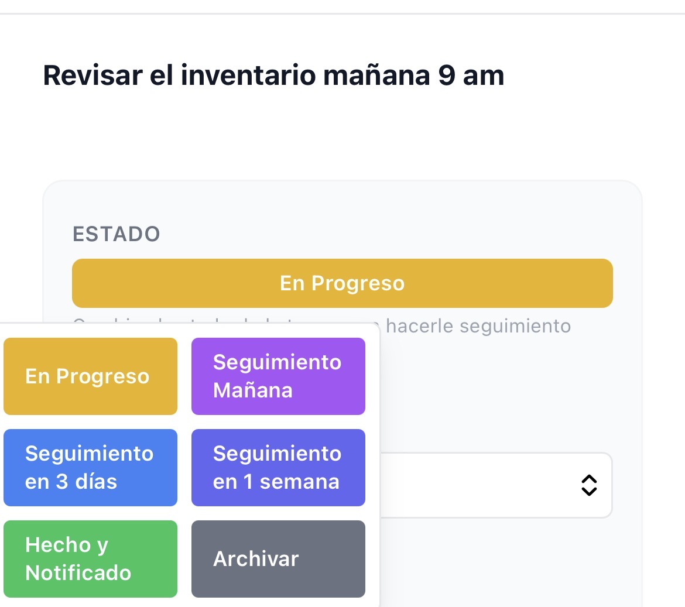
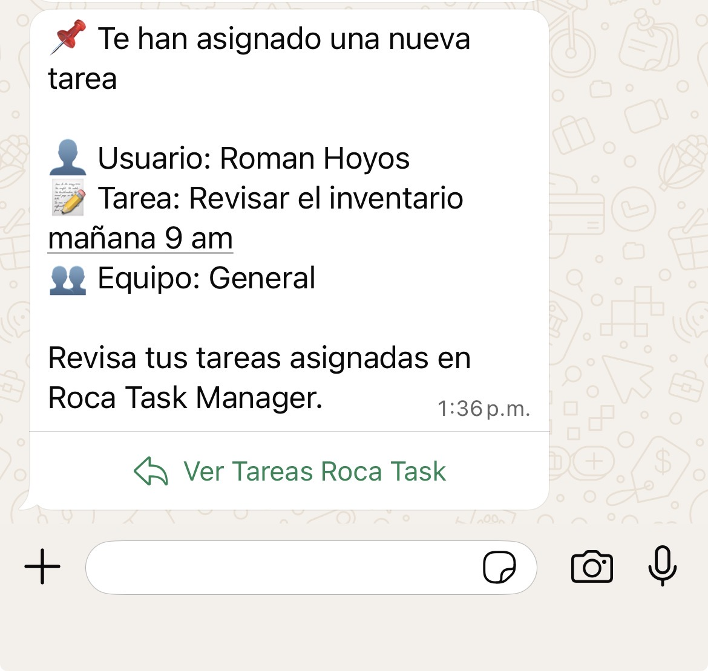

Roca Task Manager
El superpoder de no olvidar
Roca: el superpoder de no olvidar 🪨
Roca es el sistema para que tú y tu equipo no olviden nada: registra tareas por WhatsApp, envía recordatorios automáticos y te permite hacer seguimiento real de todo — sin cambiar tu forma de trabajar.
De WhatsApp al seguimiento y recordatorios en segundos.

“Revisar inventario mañana 9am con Pedro”. Así de simple.

Se asigna responsable, fecha y estado automáticamente. Nada queda “en el aire”.

Ves qué está pendiente, en riesgo o retrasado. El seguimiento no es magia. Es sistema.

Programa tareas recurrentes y recibe recordatorios automáticos. Nadie vuelve a olvidar lo que debe hacerse.
3 pasos para que tu equipo no pierda ni olvide tareas
Envías un mensaje por WhatsApp y la tarea queda con responsable y fecha en segundos.
Sabes qué está pendiente, qué está retrasado y quién es responsable. Nada vuelve a quedar en el aire.
Programa tareas una sola vez y Roca envía recordatorios automáticos para que tú y tu equipo no olviden nada.

Menos olvidos. Menos caos. Menos problemas.
Cada tarea queda registrada con responsable, fecha y estado. Tu mente se libera y el negocio avanza.

Roca envía recordatorios por WhatsApp para que nadie diga “se me pasó” o “se me olvidó”.

avanza en una tarea y dale seguimiento real. Cotizaciones, proyectos, pendientes… nada depende de la memoria. El seguimiento no es magia. Es sistema.

Roca es para equipos de 2 a 30 personas que coordinan su trabajo por chat y sienten que lo importante se pierde, las tareas se olvidan, el seguimiento se vuelve imposible y nada avanza si el gerente no lo impulsa. Si tu negocio vive en WhatsApp, Roca convierte ese caos en un sistema claro que no deja pasar nada.
Porque los negocios no fallan por falta de talento. Fallan porque algo importante se olvida.
Responsables, fechas, recordatorios y visibilidad. Un sistema, no memoria humana.
WhatsApp es el canal. La promesa es que nada se te olvide.
Empiezas rápido. Sin capacitaciones eternas ni herramientas difíciles.


Equipos que activaron el superpoder de no olvidar
“Antes se nos pasaban entregas. Ahora nada queda en el aire: responsable, fecha y recordatorios. Roca nos quitó ese estrés.”
Directora — Agencia Creativa
“Por fin dejé de estar recordando y persiguiendo. Si alguien se retrasa, lo veo y actúo a tiempo.”
Gerente de Operaciones
“Es un sistema anti-olvido. Después de probarlo, volver a depender de la memoria ya no tenía sentido.”
Fundadora
Roca: el superpoder de no olvidar
Déjanos tus datos y te contactaremos para mostrarte cómo organizar tareas y seguimientos desde WhatsApp.
Cuéntanos quién eres y cómo prefieres que te contactemos.
Nuestro equipo te agenda una demo para mostrarte Roca en acción.
Activas tu prueba gratis y empiezas a ordenar tareas y seguimientos desde WhatsApp.
Agenda tu demo
Completa el formulario y te llevamos a una página de confirmación al instante.
Al enviar tus datos, te contactaremos para mostrarte cómo funciona Roca Task Manager.
Objeciones típicas antes de activar el superpoder
Roca cuesta desde $50.000 COP por usuario al mes. Puedes probarlo gratis durante 30 días, sin tarjeta y sin compromiso.
No. Tu equipo sigue usando WhatsApp. Roca organiza y envía recordatorios para que nada se olvide.
Funciona con cualquier tipo de WhatsApp. Roca es un chat al que le envías tareas y desde ahí recibes recordatorios y seguimiento de lo importante.
Ideal para equipos pequeños (2 a 30 personas) donde lo importante se coordina por chat y se olvidan tareas con frecuencia.
La tarea queda registrada, se envían recordatorios y tú ves el estado sin tener que perseguir. Control sin desgaste.
No necesitas tarjeta de crédito para tomar tu prueba gratis de 30 días.